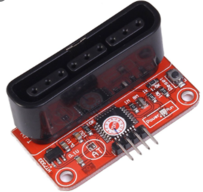
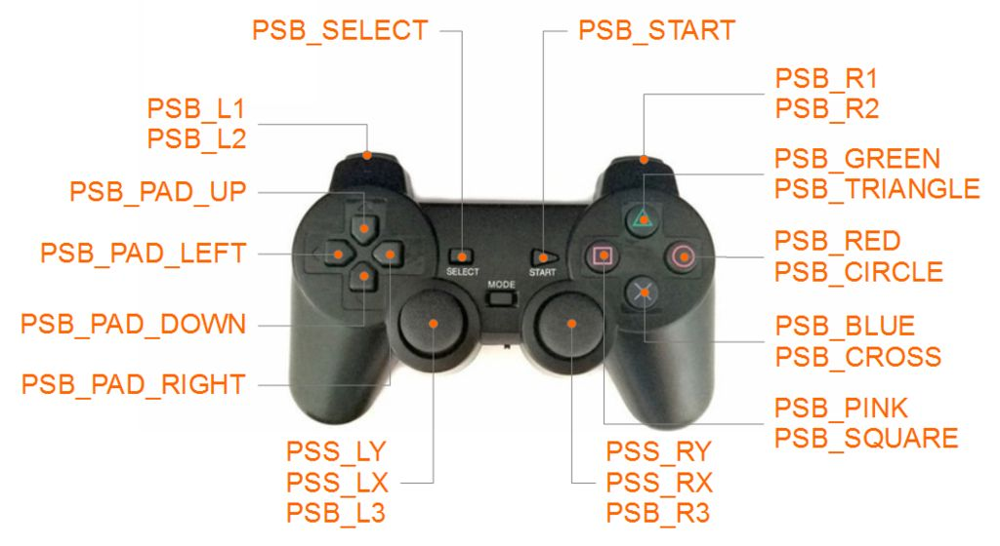
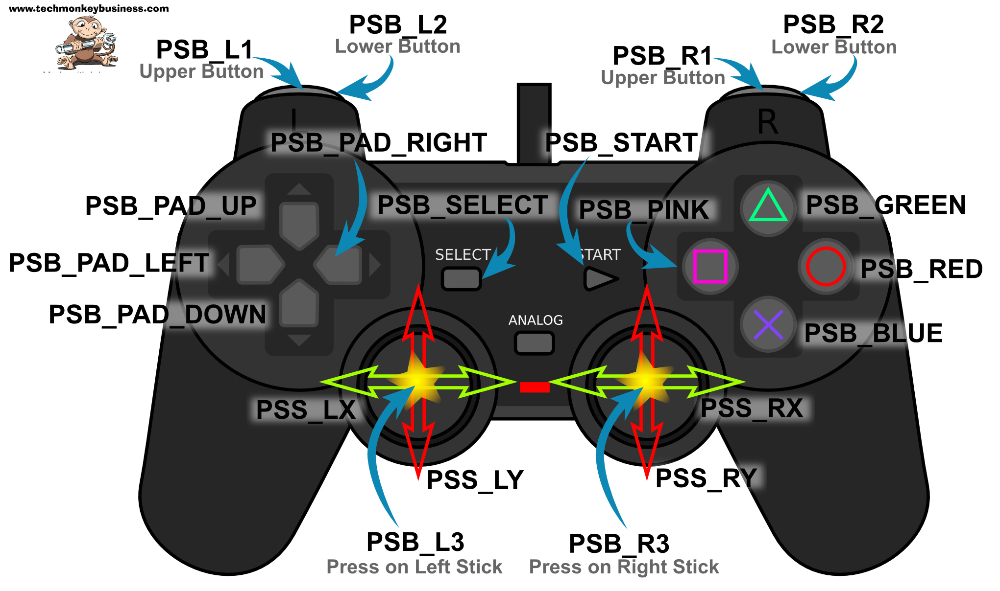
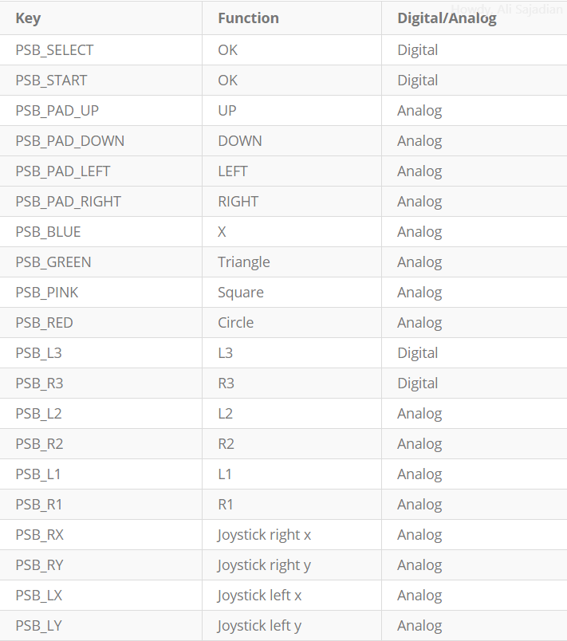
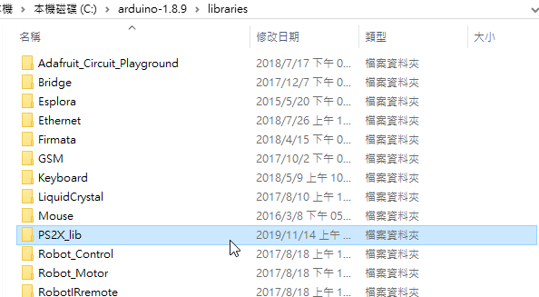
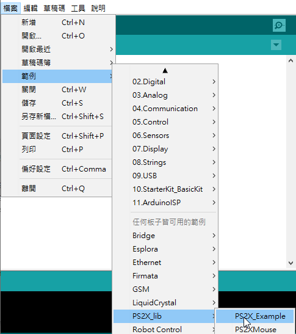
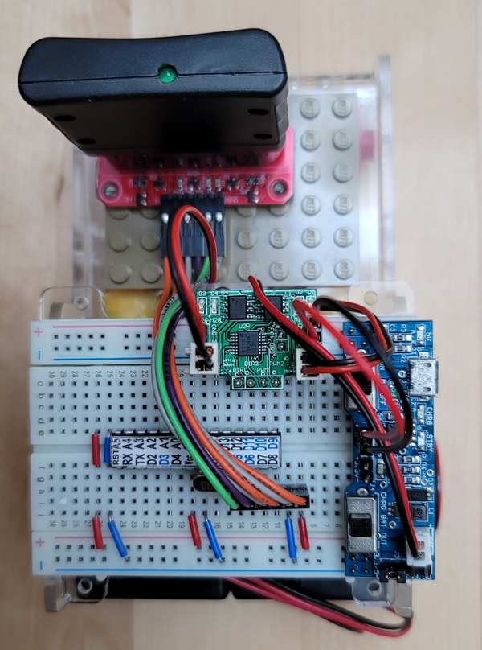

   |
| ps2 controller communication protocol(google search) |
| library(GitHub)(.zip)  
|
| 雙搖桿 遙控輪型機器人 
|
#include <PS2X_lib.h> //for v1.6 #define PS2_DAT 8 #define PS2_CMD 7 #define PS2_CLK 6 #define PS2_SEL 5 byte pressures=true; byte rumble =true; #define DirR 12 #define DirL 11 #define PwmL 9 #define PwmR 10 #define irin A1 #define led A5 int val; int valL; int valR; uint8_t dL; uint8_t dR; byte vibrate = 0; PS2X ps2x; int sel=0; int error = 1; void setup() { pinMode( DirL , OUTPUT); pinMode( DirR , OUTPUT); pinMode( A5 , OUTPUT); analogWrite(PwmL,0); analogWrite(PwmR,0); digitalWrite(DirL,HIGH); digitalWrite(DirR,HIGH); while(error==1){ error = ps2x.config_gamepad(PS2_CLK, PS2_CMD, PS2_SEL, PS2_DAT, pressures, rumble); delay(500); } digitalWrite(A5,HIGH); delay(2000); ps2x.read_gamepad(false, vibrate); if(ps2x.Button(PSB_PAD_DOWN)) sel=1; else sel=0; digitalWrite(A5,LOW); } void loop() { if(sel==1) { val=digitalRead(irin); if(val==HIGH) { analogWrite(PwmL,0); analogWrite(PwmR,255); } else { analogWrite(PwmL,255); analogWrite(PwmR,0); } } if(sel==0) { if(error == 1) //skip loop if no controller found return; ps2x.read_gamepad(false, vibrate); valL=ps2x.Analog(PSS_LY); valR=ps2x.Analog(PSS_RY); valL=map(valL,0,255,255,-255); valR=map(valR,0,255,255,-255); Serial.println(valL); Serial.println(valR); dL=1; if(valL<5 && valL>-5) valL=0; if (valL<0) {valL=-valL; dL=0; } dR=1; if(valR<5 && valR>-5) valR=0; if (valR<0) {valR=-valR; dR=0; } digitalWrite(DirL,dL); digitalWrite(DirR,dR); analogWrite(PwmL,valL); analogWrite(PwmR,valR); delay(50); } } |
| 搜尋 esp8266 ps2 controller PS2 - WEMOS Controller(link) (gitHub)(zip) PsxLib | A small and light lib for ESP32 and Ps2 Controller (link) (gitHub) (zip) |
| //D1Mini //lib : PS2X_ESP32.zip(link) #include <PS2X_lib.h> //for v1.6 /****************************************************************** * set pins connected to PS2 controller: * - 1e column: original * - 2e colmun: Stef? * replace pin numbers by the ones you use ******************************************************************/ #define PS2_DAT D1 //14 #define PS2_CMD D2 //15 #define PS2_CLK D3 //17 #define PS2_SEL D4 //16 /****************************************************************** * select modes of PS2 controller: * - pressures = analog reading of push-butttons * - rumble = motor rumbling * uncomment 1 of the lines for each mode selection ******************************************************************/ #define pressures true //#define pressures false #define rumble true //#define rumble false PS2X ps2x; // create PS2 Controller Class //right now, the library does NOT support hot pluggable controllers, meaning //you must always either restart your Arduino after you connect the controller, //or call config_gamepad(pins) again after connecting the controller. int error = 0; byte type = 0; byte vibrate = 0; void setup(){ Serial.begin(115200); delay(1000); //added delay to give wireless ps2 module some time to startup, before configuring it //CHANGES for v1.6 HERE!!! **************PAY ATTENTION************* //setup pins and settings: GamePad(clock, command, attention, data, Pressures?, Rumble?) check for error error = ps2x.config_gamepad(PS2_CLK, PS2_CMD, PS2_SEL, PS2_DAT, pressures, rumble); //delay(1000); Serial.println(" "); Serial.println(error); if(error == 0){ Serial.println("Found Controller, configured successful "); Serial.print("pressures = "); if (pressures) Serial.println("true "); else Serial.println("false"); Serial.print("rumble = "); if (rumble) Serial.println("true)"); else Serial.println("false"); Serial.println("Try out all the buttons, X will vibrate the controller, faster as you press harder;"); Serial.println("holding L1 or R1 will print out the analog stick values."); Serial.println("Note: Go to www.billporter.info for updates and to report bugs."); } else if(error == 1) Serial.println("No controller found, check wiring, see readme.txt to enable debug. visit www.billporter.info for troubleshooting tips"); else if(error == 2) Serial.println("Controller found but not accepting commands. see readme.txt to enable debug. Visit www.billporter.info for troubleshooting tips"); else if(error == 3) Serial.println("Controller refusing to enter Pressures mode, may not support it. "); // Serial.print(ps2x.Analog(1), HEX); type = ps2x.readType(); switch(type) { case 0: Serial.print("Unknown Controller type found "); break; case 1: Serial.print("DualShock Controller found "); break; case 2: Serial.print("GuitarHero Controller found "); break; case 3: Serial.print("Wireless Sony DualShock Controller found "); break; } } void loop() { /* You must Read Gamepad to get new values and set vibration values ps2x.read_gamepad(small motor on/off, larger motor strenght from 0-255) if you don't enable the rumble, use ps2x.read_gamepad(); with no values You should call this at least once a second */ if(error == 1) //skip loop if no controller found return; if(type == 2){ //Guitar Hero Controller ps2x.read_gamepad(); //read controller if(ps2x.ButtonPressed(GREEN_FRET)) Serial.println("Green Fret Pressed"); if(ps2x.ButtonPressed(RED_FRET)) Serial.println("Red Fret Pressed"); if(ps2x.ButtonPressed(YELLOW_FRET)) Serial.println("Yellow Fret Pressed"); if(ps2x.ButtonPressed(BLUE_FRET)) Serial.println("Blue Fret Pressed"); if(ps2x.ButtonPressed(ORANGE_FRET)) Serial.println("Orange Fret Pressed"); if(ps2x.ButtonPressed(STAR_POWER)) Serial.println("Star Power Command"); if(ps2x.Button(UP_STRUM)) //will be TRUE as long as button is pressed Serial.println("Up Strum"); if(ps2x.Button(DOWN_STRUM)) Serial.println("DOWN Strum"); if(ps2x.Button(PSB_START)) //will be TRUE as long as button is pressed Serial.println("Start is being held"); if(ps2x.Button(PSB_SELECT)) Serial.println("Select is being held"); if(ps2x.Button(ORANGE_FRET)) { // print stick value IF TRUE Serial.print("Wammy Bar Position:"); Serial.println(ps2x.Analog(WHAMMY_BAR), DEC); } } else { //DualShock Controller ps2x.read_gamepad(false, vibrate); //read controller and set large motor to spin at 'vibrate' speed if(ps2x.Button(PSB_START)) //will be TRUE as long as button is pressed Serial.println("Start is being held"); if(ps2x.Button(PSB_SELECT)) Serial.println("Select is being held"); if(ps2x.Button(PSB_PAD_UP)) { //will be TRUE as long as button is pressed Serial.print("Up held this hard: "); Serial.println(ps2x.Analog(PSAB_PAD_UP), DEC); } if(ps2x.Button(PSB_PAD_RIGHT)){ Serial.print("Right held this hard: "); Serial.println(ps2x.Analog(PSAB_PAD_RIGHT), DEC); } if(ps2x.Button(PSB_PAD_LEFT)){ Serial.print("LEFT held this hard: "); Serial.println(ps2x.Analog(PSAB_PAD_LEFT), DEC); } if(ps2x.Button(PSB_PAD_DOWN)){ Serial.print("DOWN held this hard: "); Serial.println(ps2x.Analog(PSAB_PAD_DOWN), DEC); } vibrate = ps2x.Analog(PSAB_CROSS); //this will set the large motor vibrate speed based on how hard you press the blue (X) button if (ps2x.NewButtonState()) { //will be TRUE if any button changes state (on to off, or off to on) if(ps2x.Button(PSB_L3)) Serial.println("L3 pressed"); if(ps2x.Button(PSB_R3)) Serial.println("R3 pressed"); if(ps2x.Button(PSB_L2)) Serial.println("L2 pressed"); if(ps2x.Button(PSB_R2)) Serial.println("R2 pressed"); if(ps2x.Button(PSB_TRIANGLE)) Serial.println("Triangle pressed"); } if(ps2x.ButtonPressed(PSB_CIRCLE)) //will be TRUE if button was JUST pressed Serial.println("Circle just pressed"); if(ps2x.NewButtonState(PSB_CROSS)) //will be TRUE if button was JUST pressed OR released Serial.println("X just changed"); if(ps2x.ButtonReleased(PSB_SQUARE)) //will be TRUE if button was JUST released Serial.println("Square just released"); if(ps2x.Button(PSB_L1) || ps2x.Button(PSB_R1)) { //print stick values if either is TRUE Serial.print("Stick Values:"); Serial.print(ps2x.Analog(PSS_LY), DEC); //Left stick, Y axis. Other options: LX, RY, RX Serial.print(","); Serial.print(ps2x.Analog(PSS_LX), DEC); Serial.print(","); Serial.print(ps2x.Analog(PSS_RY), DEC); Serial.print(","); Serial.println(ps2x.Analog(PSS_RX), DEC); } } delay(50); } |